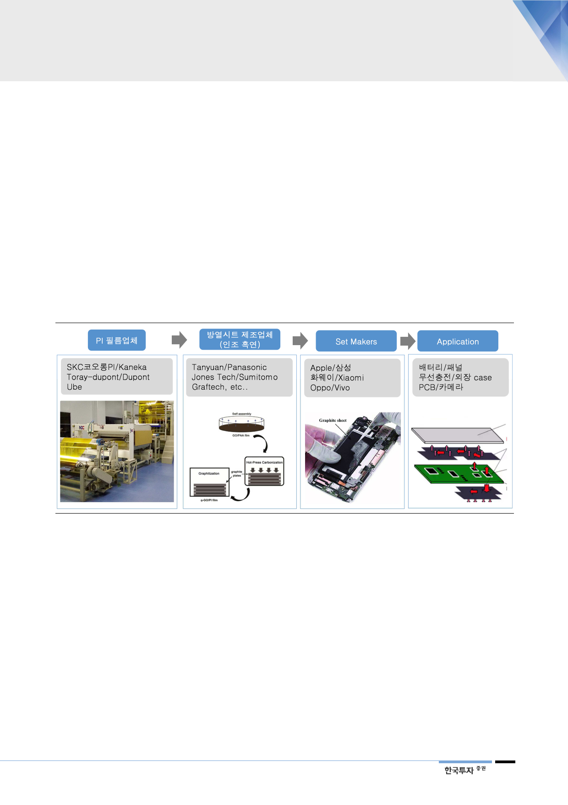

II. 2019년에도 수요 증가 지속
방열시트 수요 좋아
원재료인 PI필름의 수급이
2019년까지 타이트할 전망
1. 방열시트: 잠재 수요는 많고 공급은 부족
스마트폰업체들의 방열시트 수요의 빠른 증가 속도와 제한적인 PI필름 공급 증가
율로 폴리이미드 필름 수급이 타이트하다. PI필름 capacity 증설분 만큼 추가 생
산된 필름이 방열시트로 소비되고 있다. SKC코오롱PI의 방열시트용 PI필름 매출
액은 2018년 전년대비 38% 증가, 2019년 30% 증가할 전망이다. 폴리이미드는
엔지니어링 플라스틱 중 내열성, 치수안정성, 내화학성이 뛰어나 신뢰성이 요구되
는 우주, 항공 산업등에 절연 및 방열 소재로 사용되었다. 이후 스마트폰 등 모바
일기기 등장으로 FPCB(Flexible Printed Circuit Board)와 인조 흑연(Graphite)
방열시트용 PI필름 수요가 발생하면서 소비자용 IT제품에서 채택이 늘고 있다.
[그림 17] PI필름 시장 flow
자료: 한국투자증권
방열시트 채용 증가는
스마트폰 스펙 상향으로
촉발됨
인조 흑연 방열시트는 기존 방열소재(금속, 실리콘, 천연 흑연시트)보다 가볍고
얇으며 필름형태로 구현하기 쉬워 그 특성이 스마트폰에 최적화된 방열시트다.
하이엔드 스마트폰업체들은 스마트폰의 스펙을 상향하고 기판 집적도를 높이면서
발생하는 발열문제를 방열시트를 부착해 효율적으로 관리하려는 수요가 발생하고
있다. 또한 스마트폰의 발열 이슈가 문제가 되면서 기존에는 배터리, OLED패널,
스마트폰 AP에서 집중적으로 사용된 방열시트의 적용이 다른 부품으로 확대되고
있다. 스마트폰 스펙 고도화로 1) OLED패널 도입 증가에 따른 발열 문제, 2)
PCB기판 소형화와 고집적화로 발열 가능성 증가, 3) 무선충전 도입에 따른 발열,
4) 후면 강화유리 및 메탈 소재의 외장케이스 도입, 5) 카메라 모듈 등 소형화에
따른 발열 문제를 해결하기 위한 방열시트 수요 등 향후 적용 면적이 확대될 전
망이다.
11